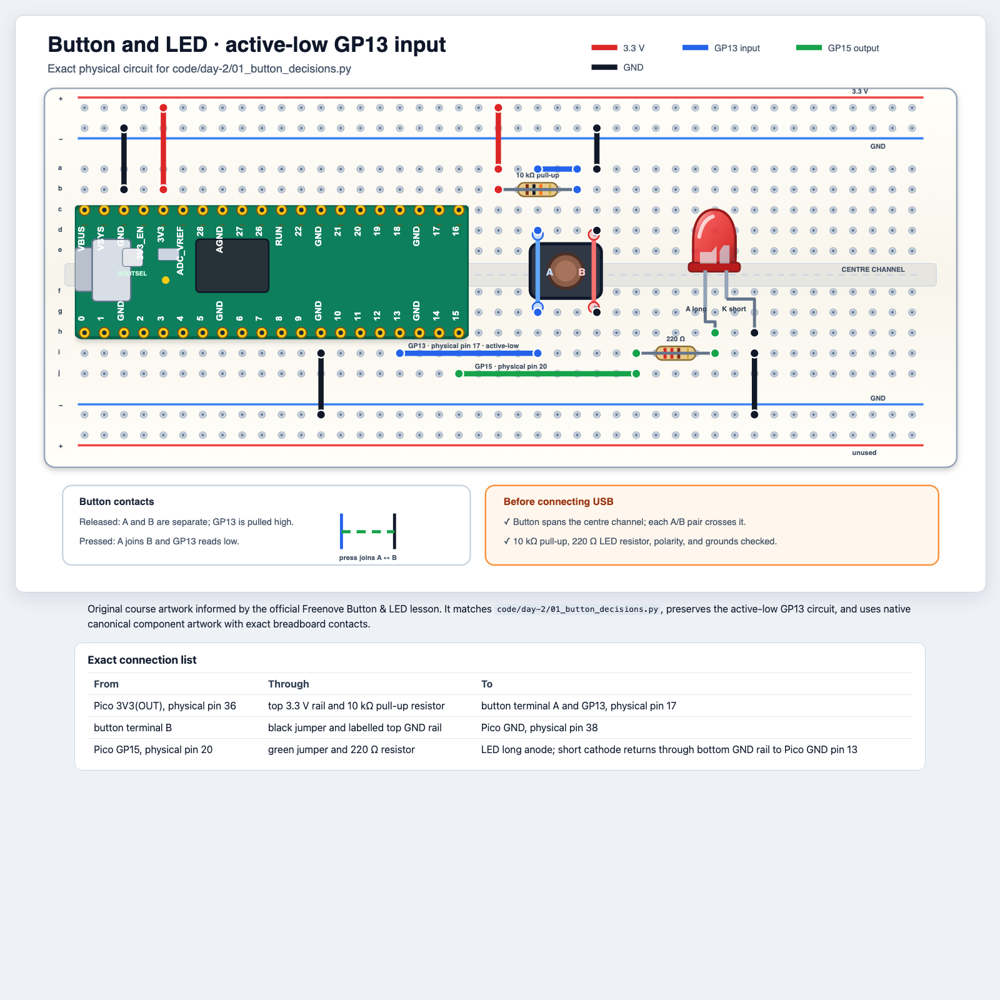
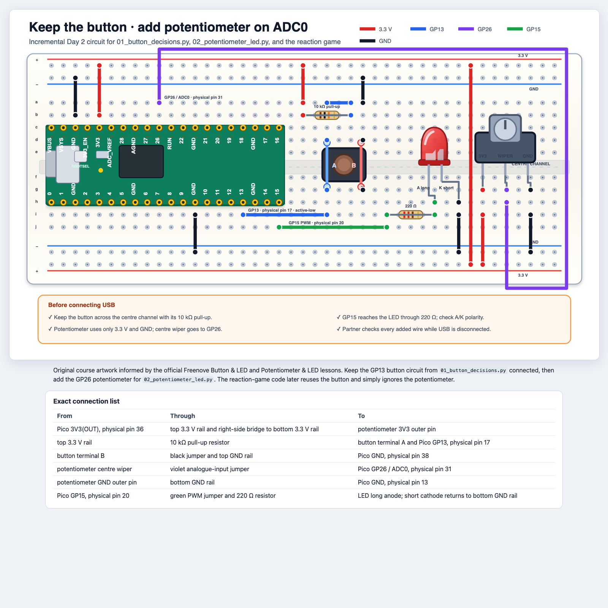

Python in der physischen Welt · Tag 2
Macht aus Eingaben Entscheidungen und baut dann eine Reaktionszeit-Challenge mit Taster, Potentiometer und klaren Python-Entscheidungen.
Mission: Verwandelt Zahlen und Tastersignale in Verhalten, das ihr vorhersagen, testen und erklären könnt.
Lernziele
Ganze Zahlen, Dezimalzahlen und Boolean-Werte unterscheiden.
Mit int(...) eine berechnete Dezimalzahl in eine ganze Zahl umwandeln.
Erklären, wie ein Vergleich zu True oder False wird.
if, elif und else für verschiedene Ergebnisse nutzen.
Mit append, len und min mehrere Reaktionszeiten in einer Liste speichern.
while-Bedingungen nutzen, die bei einer Zustandsänderung enden.
Unser Weg heute
if wählenJede Schaltung erscheint direkt bevor ihr sie aufbauen oder testen sollt.
Teil 1 · Beginnt mit Werten
Bevor ein Programm entscheiden kann, braucht es Werte in Formen, die Python versteht.
Arten von Werten
Anschauen und besprechen · Sagt, was jede Zeile speichert
raw_value = 32768
fraction = raw_value / 65535
print(type(raw_value))
print(type(fraction))
intEine ganze Zahl wie 32768. Nützlich für Anzahlen, Pin-Nummern und viele Sensorwerte.
floatEine Zahl mit Dezimalteil, zum Beispiel das Ergebnis einer Division.
Casting
In Thonny ausprobieren · Führt die Zeilen aus und prüft jedes Ergebnis
raw_value = 32768
fraction = raw_value / 65535
percent = int(fraction * 100)
print(fraction)
print(percent)
print(type(percent))
Casting bedeutet, dass Python einen neuen Wert in einer anderen Form erzeugt. Hier entfernt int(...) den Dezimalteil.
Teil 2 · Stellt eine Frage
Vergleiche erzeugen Boolean-Werte. Diese steuern später die Entscheidungen im Code.
Boolean-Werte
In Thonny ausprobieren · Sagt das Ergebnis vor Run voraus
score = 347
print(score < 350)
print(score >= 350)
print(score == 347)
TrueDie Aussage stimmt.
FalseDie Aussage stimmt nicht.
<, >= und == vergleichen Werte und erzeugen eine Boolean-Antwort.
Eine häufige Verwechslung
= speichert; == fragt, ob zwei Werte gleich sindAnschauen und besprechen · Lest jede Zeile laut in Worten
| Code | So könnt ihr es lesen … | Aufgabe |
|---|---|---|
reaction_ms = 412 | „Speichere 412 in reaction_ms.“ | Zuweisung |
reaction_ms == 412 | „Ist reaction_ms gleich 412?“ | Vergleich |
reaction_ms != 412 | „Ist reaction_ms ungleich 412?“ | Vergleich |
Mit = speichert ihr. Mit == fragt ihr „gleich?“ und mit != „ungleich?“
not und active-low-Eingabe
Auf Papier · Füllt vor dem Prüfen die letzte Spalte aus
| Physischer Zustand | button.value() | not button.value() | Gewünschte Bedeutung |
|---|---|---|---|
| Losgelassen | 1 | False | nicht gedrückt |
| Gedrückt | 0 | True | gedrückt |
Active-low bedeutet: Das wichtige Ereignis setzt das Signal auf niedrig. not macht aus dem Messwert eine verständliche Python-Antwort.
Einen Zweig wählen
if, elif und else wählen einen PfadAnschauen und besprechen · Welcher Zweig läuft bei 10 %, 45 % und 92 %?
if percent < 20:
led.duty_u16(0)
elif percent <= 70:
led.duty_u16(20000)
else:
led.duty_u16(65535)
Python prüft von oben nach unten und führt nur den ersten Zweig aus, dessen Bedingung True ist.
Teil 3 · Baut einen active-low-Eingang
Jetzt treffen Code und Schaltung aufeinander: GP13 liest die Frage, GP15 zeigt die Antwort.
Ohne Strom aufbauen · Aufgabe 1

Tasterprogramm ausführen
Schaltung testen · Erst nach der Teamkontrolle wieder verbinden
pressed = not button.value()
if pressed:
led.on()
else:
led.off()
Pressed: True aus.Ctrl+C drücken: Die LED geht aus.Wirkt der Taster immer gedrückt, trennt USB und prüft seine Ausrichtung sowie den 10-kΩ-Pull-up, bevor ihr Code ändert.
Teil 4 · Wählt mit einer Zahl eine Helligkeit
Ein Potentiometer antwortet nicht nur mit Ja oder Nein. Es liefert einen Zahlenbereich, den ihr einteilen könnt.
Ohne Strom aufbauen · Aufgabe 2

Drehknopf auslesen
Schaltung testen · Dreht die Achse langsam von einem Ende zum anderen
raw_value = knob.read_u16()
percent = int(raw_value / 65535 * 100)
Findet Messwerte nahe 0 %, 25 %, 50 %, 75 % und 100 %. Die LED sollte ihre Helligkeit gleichmäßig ändern.
Eure Messwerte müssen nicht exakt sein. Wichtig ist das Muster: niedrige Drehknopfposition → kleine Zahl, hohe Position → große Zahl.
Helligkeitsbereiche wählen
In Thonny ausprobieren · Bearbeitet dieselbe Datei und testet jeden Bereich
if percent < 20:
led.duty_u16(0)
elif percent <= 70:
led.duty_u16(20000)
else:
led.duty_u16(65535)
Teil 5 · Merken und wiederholen
Ein Reaktionsspiel braucht mehrere Ergebnisse. Jede Schleife muss wissen, wann sie endet.
Listen
In Thonny ausprobieren · Führt jede Zeile aus und erklärt das Ergebnis
times = [410, 375, 522]
print(times[0])
times.append(330)
print(len(times))
print(min(times))
print(times[-1])
times[0] fragt nach dem ersten Element.
append fügt am Ende ein neues Ergebnis hinzu.
lenlen(times) zählt die gespeicherten Ergebnisse.
minMit diesem eingebauten Werkzeug findet ihr heute das schnellste Ergebnis.
Bedingtes while
Auf Papier · Ordnet jeder Schleife den Moment zu, in dem sie endet
| Schleife | So könnt ihr sie lesen … | Sie endet, wenn … |
|---|---|---|
while len(scores) < ROUNDS: | wiederholen, solange Ergebnisse fehlen | die Liste ROUNDS Ergebnisse enthält |
while not button.value(): | warten, solange der Taster gedrückt ist | der Taster losgelassen wird |
while button.value(): | warten, solange der Taster losgelassen ist | der Taster gedrückt wird |
Diese Schleifen enden, weil sich die Bedingung ändert. Nicht jede Aufgabe braucht eine Endlosschleife.
Erinnerung an die Schaltung des Reaktionsspiels
Ohne Strom aufbauen · Nur neu aufbauen, wenn ihr die Schaltung zerlegt habt
Plant zuerst das Spiel
Auf Papier · Nummeriert die Schritte vom ersten bis zum letzten
Importe, Pin-Einrichtung, scores = [] und sicheres Ausschalten der LED sind vorgegeben.
reaction_ms und schaltet die LED aus.scores hinzu.Starter ausbauen
pass durch funktionierende SpiellogikIn Thonny ausprobieren · Bringt erst eine Runde zum Laufen, dann alle drei
try: das Wort pass.scores.append(reaction_ms) hinzu.if reaction_ms < 350 → Quick!, sonst Keep practising!.while len(scores) < ROUNDS:.
wait_ms = randint(1000, 3000)
sleep_ms(wait_ms)
start_ms = ticks_ms()
end_ms = ticks_ms()
reaction_ms = ticks_diff(end_ms, start_ms)
Timing-Werkzeuge und das sichere Aufräumen mit try/except/finally sind vorgegeben. Heute konzentriert ihr euch auf die Spiellogik darin.
Ergebnis prüfen
Schaltung testen · Führt die vollständige Version mit drei Runden aus
Quick! oder Keep practising! aus.min(scores) das schnellste Ergebnis aus.wait_ms aus und prüft, ob das Programm noch wartet.01_button_decisions.py.start_ms und reaction_ms aus.Abschlussticket
Auf Papier · Antwortet, bevor ihr die Hardware einpackt
Schreibt eine Bedingung, die True ist, wenn reaction_ms mindestens 200 und kleiner als 500 ist. Erklärt dann, was genau bei 200 und 500 geschieht.
Quellenhinweis
Typen und Casting, Boolean-Werte, Vergleichsoperatoren, = im Gegensatz zu ==, not, if/elif/else, Listen und while-Schleifen mit klaren Abbruchbedingungen.
Active-low-Tastereingang an GP13, PWM-LED an GP15, Potentiometer-Messung an GP26 / ADC0 und der selbst ausgebaute Reaktionsspiel-Starter mit vorgegebenem Timing- und Aufräumcode.
In diesen Folien verwendete Workshop-Links: ../code/day-2/01_button_decisions.py, ../code/day-2/02_potentiometer_led.py, ../code/day-2/03_reaction_game_starter.py, ../diagrams/button-and-led.html und ../diagrams/potentiometer-and-led.html.